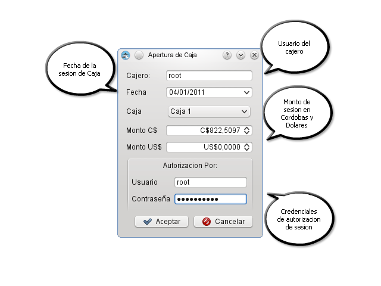

MIS Esquipulas Caja: Apertura
La finalidad de esta opción es la de indicar el total de dinero existente en la caja al iniciar cada turno de trabajo.EL saldo inicial se introducen en los campos
segun las monedas correspondientes, cada apertura lleva asociada todos los documentos creados hasta el cierre de caja.
Este un proceso obligatorio ya que no se pueden realizar procesos de ventas sin tener una apertura. Para poder llevar a cabo esta operacion el usuario autorizado, ya sea
contador, gerente debe autorizar que realmente se inicia con el monto que se esta introduciendo, para evitar errores o problemas futuros.
 Apertura de Caja